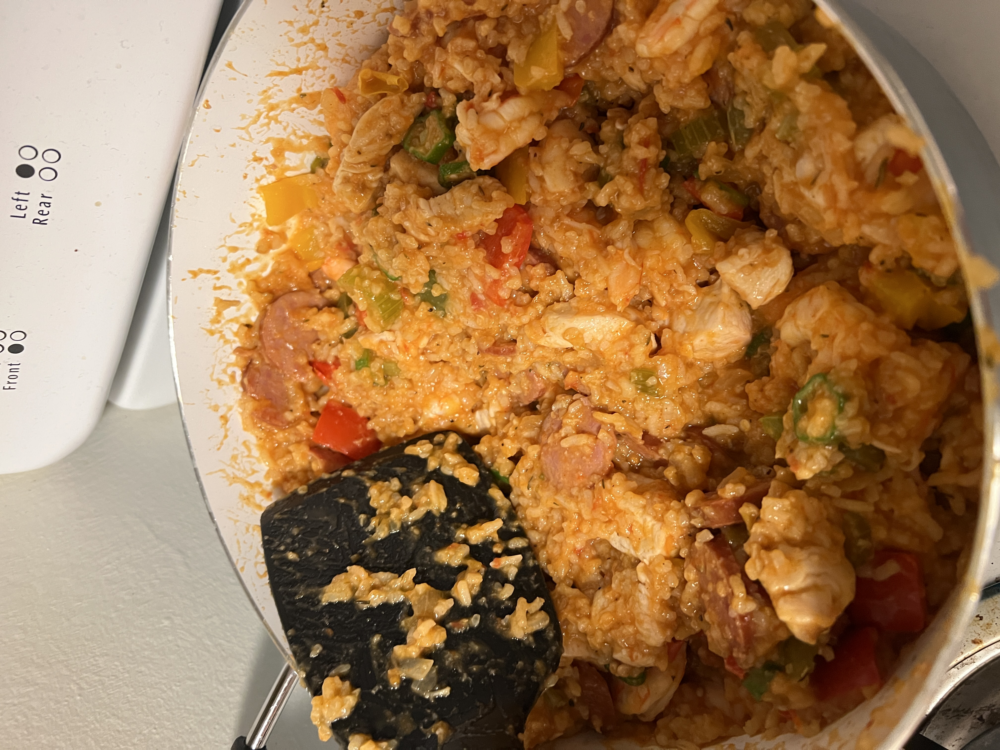
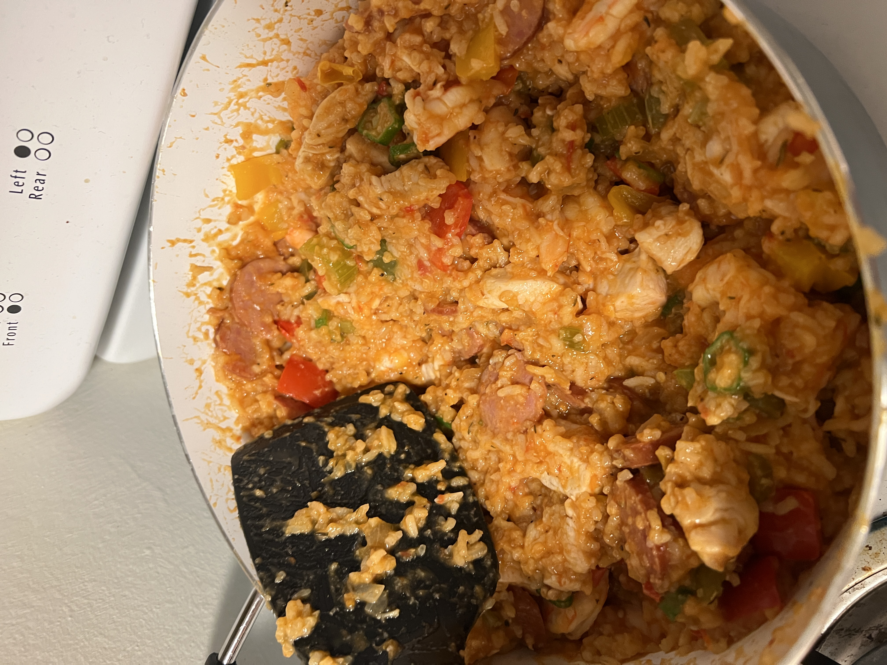

About Me
I have recently begun my professional career after graduating from Saint John's University in Minnesota.
As a physicist, my main interests lie in research pertaining to astronomy, astrophysics, and other topics relating to space.
However, almost all work relating to physics research fascinates me and I would be happy to work most any research position.
I am interested in eventually continuing my education to earn a Ph.D. in physics to pursue research full-time.
My research experience thus far involves atmospheric chemistry/physics and cosmology. This includes research with NASA's
Student Airborne Research Program (SARP),
which I discuss below. I am passionate about data collection, manipulation, and analysis, as well as software engineering and development.
I currently work as a Metrology Specialist at Productivity Quality Inc. in Plymouth, MN.
Work Experience
Metrology Specialist - Productivity Quality Inc. | Plymouth, MN (Aug. 2021 - Present)
- Develop and maintain Windows applications and scripts for both internal and external use
- Automate inspection and manufacturing processes using robotics and computer software we create
- Improve work practices to shorten routine tasks from taking hours to minutes every day
- Convert internal data storage from Excel-based to SQL-based tables, then manage those databases
- Facilitate and guide research efforts regarding accuracy of CT scanners in metrology
Key Achievements
- Created a simulation of a machining facility, allowing customers to see how adjusting parameters in their workflow can affect their accuracy and repeatability on various parts
- Initiated and completed the changes in practice from no data storage → Excel-based storage → SQL/SQLite-based storage
Oceans/Water Researcher - Student Airborne Research Program (SARP) | Palmdale, CA (June 2020 - Aug. 2020)
- Investigated the effects of the Californian Thomas Fire on Lake Casitas
- Researched how the fire impacted the lake's water area and sediment concentrations, even after the fire burned out
- Applied remote sensing (GIS) techniques and technologies to analyze NASA satellite imagery
- Presented my discoveries to NASA researchers upon completing my work
The third image represents the suspended particulate matter (SPM) concentration of Lake Casitas taken in 2014.
Atmospheric Researcher - Saint John's University | Collegeville, MN (May 2019 - Aug. 2019)
- Studied aerosol concentrations in the atmosphere at Saint John's University
- Programmed a particle swarm optimization (PSO) algorithm with my professor to model these concentrations
- Researched concentration trends seen through a several-day period, as well as how smoke from the west coast impacted MN's air
- Utilized a sun photometer to collect data; wrote programs in C++ and Mathematica to manipulate and analyze them
Physics Tutor and Lab TA - College of Saint Benedict and Saint John's University | Colleville, MN (Aug. 2018 - May 2021)
- Assisted students with homework assignments, both one-on-one and in groups
- Collaborated with professors in leading introductory laboratory classes
- Graded lab reports and made suggestions for future improvement
Projects
Cosmology Researcher - Saint John's University | Collegeville, MN (Aug. 2020 - May 2021)
- Collected data on variable, anomalous Cepheid TYC 1031 1262 1 using our telescope for my senior thesis
- Analyzed and compared data with past measurements to searchfor trends using programs such as Xephem, Gaia, and scripts in R
- Presented our results to the Physics Department upon completion
Citizen Researcher - NASA Citizen-Enabled Aerosol Measurement for Satellites (CEAMS) | Montgomery, MN (June 2020 - Aug. 2020)
The CEAMS team created this project to allow citizens to help calibrate aerosol optical depth measurements taken by satellites. The team provided participants with an Aerosol Mass and Optical Depth sampler to place in our yards, which took measurements every twenty minutes for ten weeks. An article detailing our work can be found here.
Education
Saint John's University
2017 - 2021
- Physics Club President and Treasurer
- Engineering Club Officer
- Top Physics Senior Thesis Awardee
Hobbies
Music
Cooking
 

Skills
- Programming Languages → How I've used them
- C# → creating Windows applications
- Python → data analysis and visualization
- R → data analysis and visualization
- SQL → database structure and storage
- Excel/VBA → automating workplace Excel tasks
- Mathematica → data visualization
- LabVIEW → data collection automation
- HTML/CSS → creating this website!
- Laboratory Equipment Used
- Telescopes, sun photometers, pulse lasers, oscilloscopes, function generators
- Shop equipment (e.g. welders, solders, power tools)